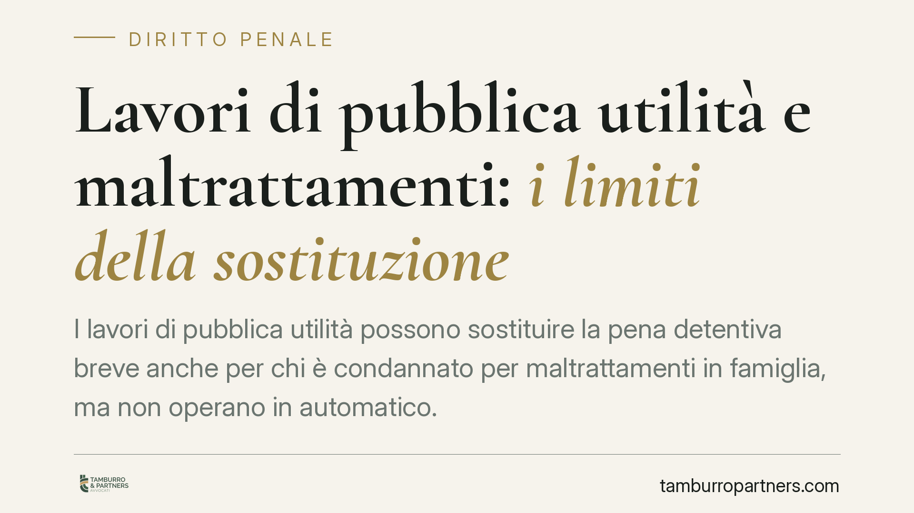

Lavori di pubblica utilità e maltrattamenti: i limiti della sostituzione
I lavori di pubblica utilità possono sostituire la pena detentiva breve anche per chi è condannato per maltrattamenti in famiglia, ma non operano in automatico. La giurisprudenza richiede al giudice una motivazione specifica sulla finalità rieducativa e sul rischio di recidiva. Vediamo i presupposti normativi, i limiti di pena e cosa significa in concreto per condannato e vittima.

Il quadro: la sostituzione delle pene detentive brevi
La riforma Cartabia (d.lgs. 150/2022) ha ridisegnato il sistema delle pene sostitutive delle pene detentive brevi. Tra queste, il lavoro di pubblica utilità è oggi una pena sostitutiva autonoma, disciplinata dall'art. 20-bis del codice penale e dall'art. 56-bis della legge 689/1981.
Il punto pratico da fissare subito è il limite quantitativo: il lavoro di pubblica utilità può sostituire la reclusione o l'arresto entro il limite di tre anni (mentre la semilibertà e la detenzione domiciliare sostitutive operano fino a quattro anni). Si tratta quindi di una misura riservata a condanne contenute, non applicabile a ogni vicenda penale.
I maltrattamenti e il nodo dell'accessibilità
Il reato di maltrattamenti contro familiari e conviventi è previsto dall'art. 572 del codice penale. È un reato abituale: non si consuma con un singolo episodio, ma con una condotta reiterata nel tempo che rende la vita della vittima vessatoria e intollerabile.
La pena edittale base è elevata (reclusione da tre a sette anni, con aumenti in presenza di aggravanti). Questo dato ha una conseguenza concreta: solo quando la pena irrogata in sentenza — dopo circostanze attenuanti, giudizio abbreviato, bilanciamento — scende entro la soglia prevista dall'art. 20-bis c.p., la sostituzione diventa astrattamente possibile. In molti casi di maltrattamenti, soprattutto gravi o aggravati, questa soglia non viene raggiunta.
Rieducazione e rischio di recidiva: due valutazioni distinte
Anche quando il limite di pena è rispettato, la sostituzione non è un diritto automatico. Il giudice deve compiere una prognosi, cioè una valutazione prospettica basata su due profili che non vanno confusi.
Il primo è la funzione rieducativa: il lavoro di pubblica utilità ha senso se può contribuire al reinserimento del condannato e a un reale cambiamento della sua condotta. Non è una sanzione pecuniaria né una pena puramente afflittiva: ha natura non retributiva e prestazione lavorativa a favore della collettività.
Il secondo è il rischio di recidiva: nei reati di violenza domestica questo profilo assume peso decisivo, perché la misura non deve esporre la vittima a un pericolo di reiterazione. L'orientamento giurisprudenziale consolidato richiede che il diniego della sostituzione sia motivato in modo specifico, caso per caso, e non liquidato con formule di stile.
> Nota: una pronuncia recente della Cassazione penale è stata segnalata su questo tema. Non essendo al momento verificabile il numero di massima né la data di deposito, non ne riportiamo gli estremi puntuali. Il principio esposto riflette comunque l'indirizzo interpretativo costante in materia.
Cosa significa per chi è coinvolto
Per il condannato. La sostituzione è un'opportunità, non un esito scontato. Serve dimostrare elementi concreti — presa di distanza dalla condotta, percorsi trattamentali, assenza di contatti conflittuali — che sostengano la prognosi favorevole. Va inoltre ricordato che il lavoro di pubblica utilità può essere revocato in caso di violazione degli obblighi o di mancata esecuzione, con ripristino della pena detentiva sostituita.
Per la vittima. La sostituzione non equivale a impunità né cancella le misure di protezione eventualmente in essere. La vittima e la sua difesa possono rappresentare al giudice elementi rilevanti sul rischio di recidiva, che incidono direttamente sulla valutazione prognostica.
Cosa fare in concreto
- Verificate il limite di pena: controllate che la pena concretamente irrogata rientri nella soglia dell'art. 20-bis c.p., altrimenti la sostituzione non è nemmeno ipotizzabile.
- Documentate il percorso: raccogliete prove di eventuali trattamenti, programmi anti-violenza o condotte riparatorie utili alla prognosi rieducativa.
- Affrontate il tema recidiva: predisponete elementi che dimostrino l'assenza di pericolo di reiterazione, perché su questo si gioca la decisione.
- Pretendete una motivazione specifica: in caso di diniego, valutate l'impugnazione se la decisione è priva di motivazione individualizzata.
- Fatevi assistere da un difensore: la strategia va calibrata sulla vicenda concreta, sia dal lato del condannato sia da quello della parte offesa.
Contributo informativo a cura di Tamburro & Partners - Avv. Giuseppe Tamburro. Non costituisce parere legale.
Ogni condominio ha una storia a sé.
Se gestisci un'amministrazione e vuoi un confronto su una specifica questione condominiale, scrivi allo studio. Ti rispondiamo entro un giorno lavorativo.